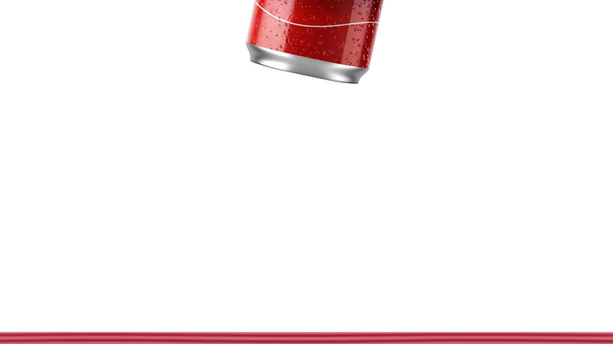

Baasrode
Theodoor Vermijlenstraat 20 A/B9200 Baasrode (Dendermonde)
- Maandag – vrijdag
- 09.00–17.30
- Zaterdag
- 09.00–16.30
- Zon- en feestdagen
- Gesloten

Frisdrank, water, bier, wijn en meer per krat, tray of pak. Afhalen in onze winkels of laten leveren in de regio Dendermonde.
